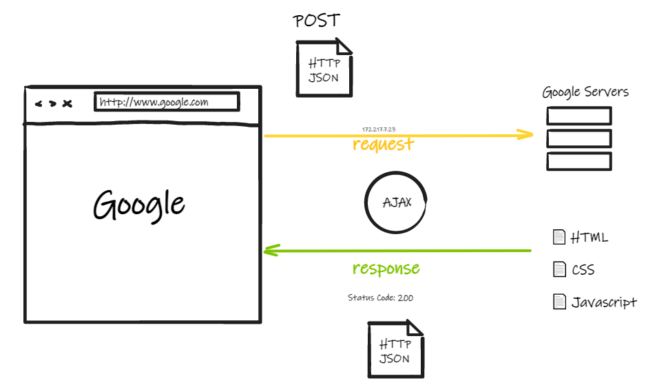

In this tutorial we plot a bar chart representing the 10 most widespread eye colors among humans in Wikidata
using the JavaScript library Chart.js.
The overall approach of the chart construction is similar to the one already covered in the last tutorial
(webviz_tutorial.html). What changes in this case is the source of data, and how to get it.
To build live interactive visualizations on the web you will need:
one or more data sources to query, in this case available via SPARQL Endpoints
a HTML document (and CSS files)
one or more Javascript libraries specific for data visualizations
However, before actually venturing into the construction of our chart, it is necessary to start with an
introduction on how JavaScript works. In particular, we will see:
the JavaScript Engine
the difference between synchronous and asynchronous programming
AJAX
How JavaScript Works
"Javascript is a single threaded language that can
be non-blocking."
First of all, what is a program? It is a set of instructions that has to:
allocate memory: stores variables, files etc.
parse and execute scripts: meaning to read and run commands
What happens with programming languages for front-end such as JavaScript is that Browsers implement engines
that are able to read code and execute it. In the case of Chrome for example, we have the V8 Engine.
The JavaScript Engine
In general, the JavaScript Engine consists of two parts (depicted in Fig. 1):
memory heap: where memory allocation happens eg. const a = 1;
call stack: where the code is read and executed
Fig. 1: The JavaScript Engine representation (source).
To better understand how the call stack works, we can run these three lines of code in the browser console:
The JS Engine reads the first line and put it in the call stack, runs it, and remove it. The
same happens for the second console and so on.
If we complicate a little bit the code, for example a function that calls another function such as the
example below, the order of execution in the call stack becomes less linear.
const one = () => {
const two = () => {
console.log('4');
}
two();
}
We call the function one(), that goes at the top of the call stack. The first command is to run
another function, two(), that enters the call stack on top of one(). Running
two() means to execute the console.log() inside it. This
console.log() also enters the call stack, on top of two(). Since there is nothing
else, the call stack begins to run commands starting from the last that entered, meaning
that console.log('4') is executed, the number 4 printed and the command removed from the stack.
Since two() and one() have no other commands to execute, they are both removed
from the stack, one after the other, leaving the stack empty.
If we resume the first definition that we gave of JavaScript, we can understand that single threaded
means that there is only one stack that can execute one command at a time. Moreover, this
execution takes place in a specific order: first in last out.
Synchronous and Asynchronous
The behavior we just witnessed is called synchronous, and happens when the operations are executed
sequentially, one after the other. This implies that complex tasks may take a lot of time to be completed,
blocking everything else for the time of its execution.
Luckily, we have non-blocking strategies: asynchronous programming. Asynchronous
processing implies that operations can run in parallel if they are not dependent on others. It means that
certain tasks can be offloaded and executed as the same time as other operations, and return results only
when they are ready.
One way to approach asynchronous programming is to set timers. Consider and try this example:
The order of output of the results is quite unexpected compared to what we have seen so far: we have
console.log('1'), then console.log('3') and finally console.log('2')
two seconds later. It looks like we just skipped this whole step and put this at the very end. How is
that possible?
The JavaScript Runtime Environment
This more complex situation is what we call the JavaScript Runtime Environment, part of the browser, that
includes (Fig. 2):
the memory heap
the call stack
a set of Web APIs such as DOM, AJAX, Timeout
the Callback Queue
the Event Loop
Fig. 2: The JavaScript Runtime Environment representation (source).
If we considere the piece of code above, what is happening is that:
console.log('1') enters the stack and is executed immediately
because setTimeout() is not part of JavaScript, but part of the Web APIs, after entering
the stack it is recognized as a Web API and gets popped out of it.
this Web API starts a timer of 2 seconds
because the call stack is empty, the JavaScript engine now goes to console.log('3') and
executes it
after the 2 seconds, the callback of setTimeout() needs to be run
this means that console.log('2') is addedd to the callback queue
in the meantime, in the background the event loop is constantly checking if the call
stack is empty or not. If the call stack is empty, it then checks for any callbacks. In our case, it
finds console.log('2') and moves it in the call stack.
console.log('2') is executed and removed from the call stack
TO RECAP:JavaScript is a single threaded language that can be nonblocking means that
it has one call stack and it does one thing at a time. In order to not block the single thread,
it can be asynchronous with callback functions. These callback functions get run in the background, through
the callback queue and then the event loop, to bring it back to the call stack when they should.
AJAX (Asynchronous JavaScript and XML)
How is all this related to our goal, to create a chart by requesting live data from a SPARQL endpoint? The
main action we need to address is precisely that of requesting data, an operation that can take a
variable amount of time depending on the size of that data. Imagine it within the larger
context of the website you will have to build to display your search results: there is a risk
that while you are waiting for the data, which must then be processed and displayed, some part of the site
will not load because it is blocked by this costly operation. And that's where asynchronous
programming comes in: the data request must be handled with web technologies designed for that purpose,
specifically Asynchronous JavaScript and XML (AJAX).
The Client-Server Communication
Clients and servers can communicate by exchanging individual messages. HTTP (Hypertext
Transfer Protocol) is the language that allows this communication through 5 main methods: GET, POST, PUT,
DELETE. The messages sent by the client (usually a web browser) are called requests and the
messages sent by the server are usually called responses. An overview of this communication
is offered at Fig. 3.
Over the years, HTTP was extended to not only fetch hypertext documents like HTML,
but also images and videos, and post content to servers like with HTML form results.

Fig. 3: An overview of Client-Server communication.
The Format
In the exchange between server and browser, the data can only be in TEXT form.
In this case JSON (JavaScript Object Notation), which is is a syntax for storing and
axchanging data, is the standard format to work with. The reason is that it's basically text written with
JavaScript object notation. Why not XML?
JSON is already similar to a JavaScript object, easier to work with
JSON format is a more succinct way which saves bandwidth and improves response times when sending
messages back and forth between client and server
Just remeber:
JSON.parse() from json string to js object
JSON.stringify() from js object to json string
The Magic of AJAX
Normally, when the browser receives a response from the server, it is necessary to reload the page in order,
for example, to show the new content. This becomes extremely wasteful.
What if I only want to update a very small part of the site? This issue led to the creation of technologies
that allow web pages to request small chunks of data such as HTML, XML, plain text, JSON and display them
only when needed.
The web technologies that compose AJAX do exactly this: allow you to read from a web server after the
page
has loaded and update a web page without reloading it.
And finally send data in the background while the user is interacting with the website.
AJAX is just a method of combining pieces together to achieve this result.
The Evolution
XML HTTP Request (the old way)
var request = new XMLHttpRequest();
request.open('GET', '/my/url', true);
request.onload() = function() {
if (request.status >= 200 && request.status < 400) {
// Succes!
var data = JSON.parse(request.responseText);
} else {
// We reached our target server, but i returned an error
}
};
request.onerror = function() {
// something
}
request.send();
Here we are fetching (through the Fetch
API) a JSON file across the network and printing it to the console. The simplest use of
fetch() takes one argument — the path to the resource you want to fetch — and
returns a Promise that resolves with a Response object that can be transformed into JSON
format.
The Promise object represents the eventual completion (or failure) of an asynchronous operation and its
resulting value (discover more).
An equivalent way to code it is to use Async/Await functions:
async function getData(url) {
const response = await fetch(url);
const data = await response.json();
console.log(data);
}
What I do here is basically declare that I'm writing an asynchronous function. I wait for the fetch to
retrieve data, then store it into a variable. Once this action is completed, I change the response format to
JSON and finally log it into the console.
To decide which approach to use is entirely up to you. To discover more on the evolution of Asynchronous
JavaScript you can read this
article.
Now We Plot
Main actions:
create the HTML page
include Chartjs library
configure chart requirements
setup enpoint and query
fetch data and process it
HTML
Create a HTML document with the mandatory structure:
At the bottom of the body element add the link Chart.js
library (you can use the CDN link or download the library
and reference the full path to the folder).
We follow the instructions on the documentation of Chart.js and we create a HTML element with a unique id,
wherein to include the final chart.
<div>
<canvas id="myChart"></canvas>
</div>
Configure the Chart
Even before retrieving the data, we can define the function that will receive it and create the chart. This
can prove to be an important step, because depending on the library we are using, the data may have to take
a different form. If we check the documentation for creating a barchart, we see that:
we need two variables, one for the label and one for the corresponding number of
repetitions (count)
both the labels and the counts can be elements of two arrays,
either as strings or integers.
You can either add a new script tag, or in a separated .js file imported in the HTML document,
we include our
function:
We define the function createBarChart(canvaId, label, labelArray, dataArray)
with parameter:
canvaId: the id to retrieve the canva inside of which the chart will appear
label: the string that will appear in the legend to describe data
labelArray: the array that will contain the labels for the x axis
dataArray: the array that will contain the count for the y axis
We retrieve the canva ctx that will contain the chart through its id.
We create a new instance of the Class Chart to instantiate the barchart. It allows several
configuration parameters. We include the followings::
the selector of the HTML element where to plot the chart ctx
an object {} with the settings, which includes:
the type of chart. The value bar is taken from a controlled list of
values, and it represents a barchart
the data specifications. This includes:
labelArray to be used on the x axis (that we will retrieve in a moment)
the datasets, that is, the data series that appear in the chart,
organised in an Array of Objects.
In our case (a simple bar chart), hence we have only one series, hence one object, for which
we can specify:
the description of what bars represent, i.e. label
the dataArray source (that we will retrieve in a moment)
the borderWidth of the bars
Data
First, you must have the SPARQL query needed to retrieve the data:
SELECT ?eyeColorLabel (COUNT(?human) AS ?count)
WHERE {
?human wdt:P31 wd:Q5.
?human wdt:P1340 ?eyeColor.
SERVICE wikibase:label { bd:serviceParam wikibase:language "[AUTO_LANGUAGE],en". }
}
GROUP BY ?eyeColorLabel
ORDER BY DESC(?count)
LIMIT 10
I want to search on Wikidata for human eye colors: I count the repetitions thanks to the COUNT and GROUP BY
operators, show results in descending ORDER and take the first 10 (LIMIT).
I store all the necessary information inside variables:
const myEndpoint = 'https://query.wikidata.org/sparql';
const myQuery = 'SELECT ?eyeColorLabel (COUNT(?human) AS ?count) WHERE { ?human wdt:P31 wd:Q5. ?human wdt:P1340 ?eyeColor. SERVICE wikibase:label { bd:serviceParam wikibase:language "[AUTO_LANGUAGE],en". }} GROUP BY ?eyeColorLabel ORDER BY DESC(?count) LIMIT 10';
const encodedQuery = encodeURIComponent(myQuery);
const myUrl = myEndpoint + '?query=' + encodedQuery;
Notice that:
I need to encode the query string with the encodeURIComponent() function
to escape special characters (more here).
Since I need to fetch data through a URL, I need to compose the request in this form: endpoint + '=query' + encodedQuery (example:
'https://query.wikidata.org/sparql?query=SELECT%20%...').
Now we can finally retrieve the data we want to show. Keeping in mind everything we have seen so far, we
define an asynchronous function, which will show the data on the canva only once it is ready.
We define the function fillChart(url, canvaId, label)
with parameter:
url: the string that cointains the query and the endpoint to interrogate.
canvaId: the id to retrieve the canva inside of which the chart will appear
label: the string that will appear in the legend to describe data
We define two empty arrays, to contain data:
labelArray: the array that will contain the labels for the x axis
dataArray: the array that will contain the count for the y axis
We separate the body into two main blocks:
try is the core, will contain the actions to carry out if we succed
catch will execute something in case any error arises
the first action is to wait for the response. In order to do so, we request data with the
fetch() function, that takes as parameters:
url: a string that contains both the endpoint end the query
an object {} that contains some options that can be specified. In our case we want:
the method to be a GET request
and Accept results only in sparql-results+json format
We store the response as JSON format (.json()) in the data variable.
Once we have our data, I can access variable values in the same way we did so far: through
results and bindings. The results object has the form of an
array of objects (remember list of dictionaries).
We iterate over the single objects (entry) of this array, get the value for the label
(entry.eyeColorLabel.value) and push it inside the labelArray. We do the same
for the count (entry.count.value inside the dataArray).
Finally, with the data thus processed, we plot the chart using the same function we defined above:
createBarChart(canvaId, label, labelArray, dataArray)
Finally!
All we have to do is call the function, replacing the parameters with the variables we defined:
fillChart(myUrl, 'myChart', 'Eye colors');
Exercize
Try to replicate the same process to plot a line chart that shows...